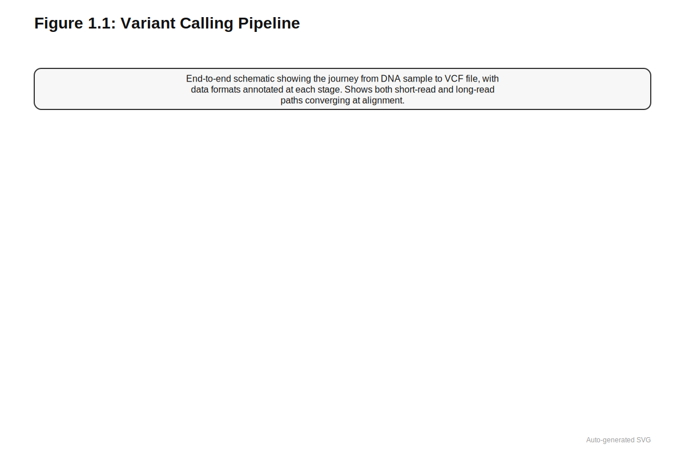
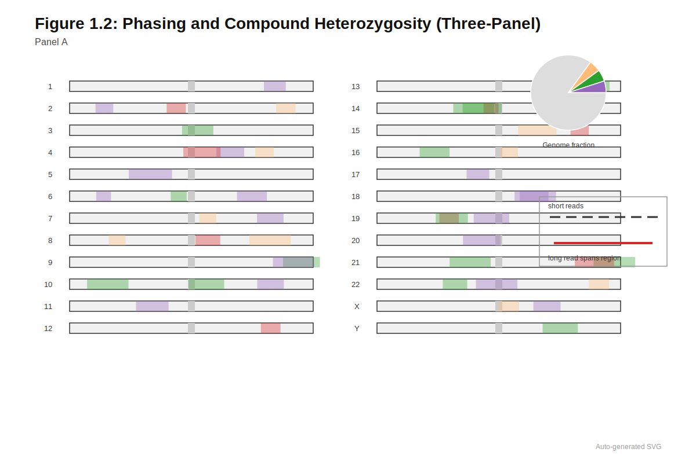
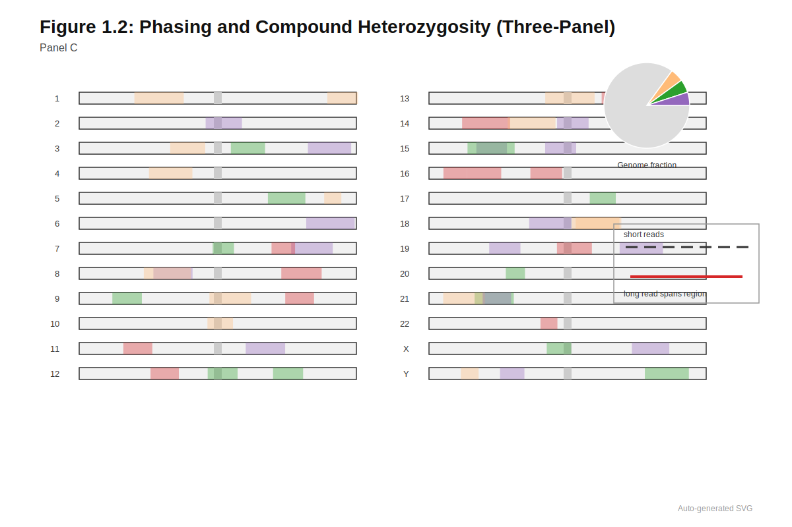
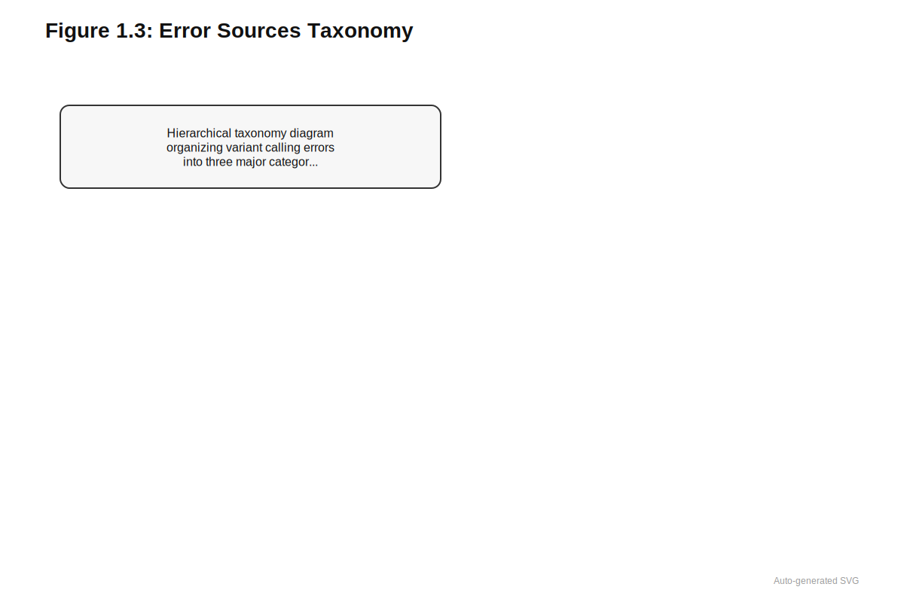
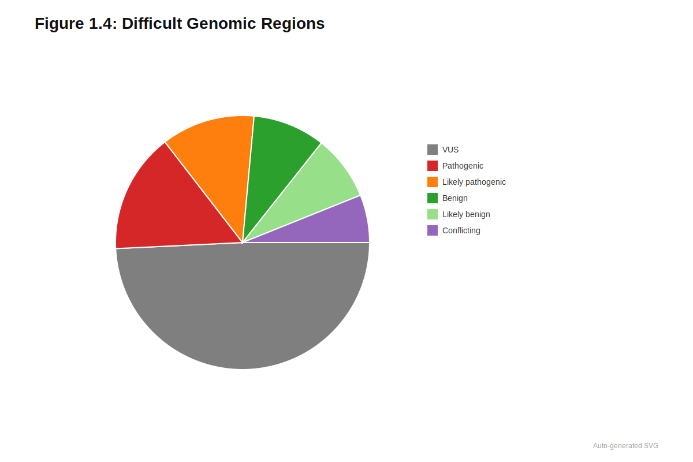

1 From Reads to Variants
Variant calls are inferences, not observations.
Estimated reading time: 40-50 minutes
Prerequisites: Basic understanding of DNA structure and the concept of genetic variants (mutations, SNPs). No prior knowledge of sequencing technology required.
You will learn:
- How next-generation sequencing produces data and its inherent limitations
- The computational pipeline that transforms raw reads into variant calls
- Where variant calling systematically fails and why this matters for downstream models
- How deep learning (DeepVariant) reformulates variant calling as pattern recognition
Key insight: Variant calls are inferences, not observations. Every downstream model inherits the systematic errors and blind spots of the variant calling pipeline.
Every polygenic risk score, every variant pathogenicity prediction, every clinical interpretation of a patient’s genome begins with a prior assumption: that the variants being analyzed are real. Researchers download VCF files from biobanks, filter by allele frequency, and feed variants into predictive models without questioning whether those variants truly exist in the original biological sample. Yet the sequencer did not observe these variants. It produced millions of short reads with characteristic error profiles; alignment algorithms placed those reads against a reference genome with varying confidence; variant callers integrated the evidence into genotype calls that may or may not reflect biological reality. When this inference fails, every downstream analysis inherits errors that propagate silently through the entire computational pipeline.
Variant calling is inference, not observation. Errors introduced at this stage propagate silently through every downstream analysis.
Short-read sequencing technologies produce reads of 100 to 300 base pairs with error rates near one percent, creating fundamental ambiguities in repetitive regions, segmental duplications, and regions of high sequence complexity. Classical variant callers addressed these challenges through probabilistic models that integrate multiple evidence types: base quality scores, mapping quality, strand balance, and population allele frequencies. Deep learning approaches, exemplified by DeepVariant, reformulated variant calling as image classification, learning to distinguish true variants from artifacts in ways that generalize across sequencing platforms and sample types.
The representational approach of encoding pileups as images anticipates the embedding strategies discussed in Section 5.6. DeepVariant’s CNN architecture shares design principles with regulatory models like DeepSEA (Section 6.2), though applied to different input modalities. Where DeepVariant learns variant-specific patterns from labeled training data, foundation models (Section 14.2) learn sequence representations from unlabeled genomes.
Understanding where variant calling succeeds and fails is essential context for genomic foundation models. The challenging regions of the genome (tandem repeats, segmental duplications, the major histocompatibility complex) that confound variant callers also challenge models trained on variant calls. The systematic errors introduced at this stage create systematic blind spots that no amount of sophisticated downstream modeling can correct. The evaluation challenges created by these blind spots are examined in detail in Section 12.2.
1.1 NGS Data Challenges
The human genome contains approximately three billion base pairs, yet no instrument can read this sequence in one continuous stretch. Next-generation sequencing (NGS) instead fragments DNA molecules into short pieces, sequences each fragment independently, and produces tens to hundreds of gigabases of sequence data per run (Goodwin, McPherson, and McCombie 2016). The typical output consists of paired-end Illumina reads spanning 100 to 300 base pairs each, with each base assigned a quality score reflecting the instrument’s confidence in that call. This abundance comes at a cost: every read carries non-trivial measurement uncertainty, including substitutions from miscalled bases, context-specific errors near homopolymers, and quality degradation toward read ends.
Short-read sequencing produces reads of 100-300 base pairs. What genomic features do you predict would be difficult to analyze with such short fragments? Consider features that span long distances or involve repetitive sequences.
Long-read technologies from Pacific Biosciences and Oxford Nanopore extend the observable space dramatically, producing reads of 10 kilobases to over a megabase in length (Wenger et al. 2019; Dabernig-Heinz et al. 2024). These platforms access genomic territory invisible to short reads, including complex structural variants, segmental duplications, and repetitive regions. They carry their own characteristic error profiles, however, and the choice of sequencing platform fundamentally shapes which variants are discoverable and which systematic biases enter downstream analyses. A variant residing within a repetitive element may be invisible to short reads but readily detected by long reads that span the entire repeat.
The central problem is deceptively simple in statement but profound in consequence: how do we turn raw reads into a reliable list of genomic variants? Answering this question requires disentangling three fundamentally different sources of signal that manifest identically as mismatches between reads and reference. Sequencing errors arise from instrument noise and PCR artifacts during library preparation, creating false variants that never existed in the original DNA. Alignment artifacts occur when reads are mapped to incorrect genomic locations, particularly in repetitive regions and paralogous gene families, causing true variants to appear at wrong positions or disappear entirely. Genuine biological variation encompasses germline variants inherited from parents, somatic mutations acquired during cellular division, and mosaicism where only a fraction of cells carry a particular change. Historically, complex modular pipelines combining probabilistic models and hand-crafted heuristics addressed this separation (Nielsen et al. 2011). Deep learning now plays an important role in simplifying and improving parts of this stack, but understanding the classical pipeline remains essential for interpreting what downstream models actually learn.
Germline variant calling in whole-exome and whole-genome sequencing presents the core technical challenge underlying most genomic deep learning applications. Somatic variant calling in cancer and RNA-seq-specific variant calling share many parallels but require additional considerations addressed elsewhere.
1.2 Targeting Strategies: Panels, Exomes, and Genomes
Different clinical and scientific goals demand different sequencing strategies. A patient presenting with sudden cardiac arrest at age 35 needs deep, reliable coverage of KCNQ1, KCNH2, SCN5A, and other ion channel genes associated with long QT syndrome; sequencing her entire genome to find these variants would waste resources and delay clinical decisions. A biobank building training data for polygenic risk scores across hundreds of thousands of participants needs genome-wide coverage, even if individual sites have modest depth. A family searching for the cause of their child’s undiagnosed developmental delay needs comprehensive coverage that leaves no coding exon unexamined. These competing demands drive the choice between targeted panels, whole-exome sequencing, and whole-genome sequencing.
1.2.1 Targeted and Panel Sequencing
When clinicians already know which genes to examine, targeted gene panels capture tens to hundreds of genes selected for a specific clinical indication. Panels for cardiomyopathy, hereditary cancer syndromes, or epilepsy restrict sequencing to regions of known clinical relevance. By limiting the target to a small number of loci, panels achieve very deep coverage (often exceeding 500×) at modest cost, enabling sensitive detection of rare variants and some degree of mosaicism.
The narrow scope of panels limits their utility for deep learning and population-scale analysis. Panels miss novel disease genes outside their predefined targets, cannot be easily repurposed for new traits, and often have heterogeneous content across laboratories that complicates data aggregation. For large-scale genomic foundation models, panel data serve better as richly phenotyped anchors than as primary training material: they provide clean labels for specific variants but sparse genomic coverage overall. The sparse coverage of panel data creates specific challenges for transfer learning, as discussed in Section 10.5.1.
1.2.2 Whole-Exome Sequencing
Protein-coding sequence represents approximately 1 to 2 percent of the genome but harbors a disproportionate share of variants with known functional consequences. Whole-exome sequencing (WES) enriches coding exons and some splice-adjacent regions through hybridization probes that pull down targeted DNA, followed by short-read sequencing. Typical coverage ranges from 80 to 150× for exonic targets, sufficient for confident heterozygous variant calling in most regions.
WES has driven Mendelian disease gene discovery for over a decade and powered early biobank-scale efforts, including the exome subsets of gnomAD and many hospital-based cohorts (Karczewski et al. 2020). The capture-based approach introduces systematic biases that propagate into downstream analyses, however. Certain exons consistently fail to capture efficiently, particularly those with extreme GC content, high repetitive content, or unusual length. A variant in the first exon of HTT (the Huntington disease gene) might be missed entirely due to extreme GC richness, and a variant effect predictor trained on WES data will never encounter variants in poorly captured regions. These blind spots are invisible in standard benchmarks but can have substantial clinical consequences. Batch effects tied to reagent lots and evolving panel designs further complicate multi-cohort analyses. Technical confounding from batch effects is systematically analyzed in Section 13.2.2, with mitigation strategies in Section 13.9.
1.2.3 Whole-Genome Sequencing
Noncoding variants contribute substantially to human disease, and structural variants often span boundaries between exonic and intronic sequence. Whole-genome sequencing (WGS) samples nearly all bases in the genome at typical coverage of 30 to 60×, encompassing both coding and noncoding regions without the biases introduced by capture chemistry. Because there is no enrichment step, WGS produces more uniform depth than WES and enables detection of noncoding regulatory variants, structural variants, and copy-number changes alongside single nucleotide variants (SNVs) and indels (insertions and deletions).
For ML readers: Genetic variants are classified by their size and mechanism:
Single Nucleotide Variants (SNVs): A single base pair change (e.g., A→G). Also called SNPs (single nucleotide polymorphisms) when common in the population. The most frequent variant type and easiest to detect.
Insertions and Deletions (Indels): Addition or removal of 1-50 base pairs. When occurring in coding regions, indels that aren’t multiples of 3 cause frameshifts that disrupt the entire downstream protein sequence.
Structural Variants (SVs): Large-scale genomic rearrangements (>50 bp):
- Deletions: Loss of a genomic segment
- Duplications: Extra copies of a segment
- Inversions: A segment flipped in orientation
- Translocations: Segments moved between chromosomes
Copy Number Variants (CNVs): Changes in the number of copies of a genomic region, ranging from kilobases to megabases. Can encompass entire genes.
Detection difficulty increases with variant size: SNVs are reliably detected by short reads, while SVs often require long reads or specialized algorithms. Most variant effect predictors focus on SNVs and small indels; SVs require different computational approaches.
WGS has become increasingly favored for new large cohorts and rare disease studies. The UK Biobank’s release of 500,000 whole genomes and gnomAD’s expansion to include diverse populations both rely on WGS as the primary data type (Bycroft et al. 2018; Karczewski et al. 2020). The data are reusable for many downstream analyses, including GWAS (Chapter 3), polygenic score development, and rare variant burden tests, and the simplified pipeline eliminates the need to track changing capture designs across time and centers. Whole-genome models typically assume access to WGS-based variant calls, even when actual training sets combine WES and WGS data for practical reasons.
1.2.4 Long-Read Sequencing Technologies
Short reads face a fundamental limitation rooted in information theory: sequences shorter than local repeats, segmental duplications, or structural variants cannot unambiguously resolve these features. Consider the SMN1 and SMN2 genes, which differ by only five nucleotides across their entire coding regions. Distinguishing them is clinically critical for diagnosing spinal muscular atrophy, yet short reads routinely fail this task because a 150-bp read maps equally well to either genomic location.
Pacific Biosciences (PacBio) HiFi sequencing produces reads of 10 to 25 kilobases with per-base accuracy exceeding 99.9% through circular consensus sequencing, where the same molecule is read multiple times to correct random errors (Wenger et al. 2019). Oxford Nanopore Technologies (ONT) instruments generate reads ranging from a few kilobases to over a megabase in length, with rapidly improving raw accuracy and unique capabilities including portable sequencers suitable for field deployment, direct RNA sequencing without reverse transcription, and real-time base calling during sequencing (Dabernig-Heinz et al. 2024). These technologies played central roles in the telomere-to-telomere (T2T) assembly of a complete human genome and in emerging human pangenome references that capture population diversity beyond what any single linear reference can represent (Nurk et al. 2022; Liao et al. 2023).
Long reads transform variant calling by traversing low-complexity and repetitive regions essentially invisible to short-read technologies. Dedicated variant callers such as PEPPER-Margin-DeepVariant, Clair3, Sniffles2, pbsv, and cuteSV exploit read length and alignment patterns to detect insertions, deletions, inversions, and complex rearrangements (Shafin et al. 2021; Zheng et al. 2022; Smolka et al. 2024; “PacificBiosciences/Pbsv” 2025; Jiang et al. 2020). Single molecules spanning multiple heterozygous sites provide direct phasing information for haplotype resolution without statistical inference. Long reads also inform graph-based references and pangenomes that better represent population diversity than traditional linear references (Liao et al. 2023).
Short-read pipelines remain the workhorse for large human cohorts due to cost and throughput advantages that will persist for years. Downstream models must accommodate variants discovered by either technology and must be evaluated on composite callsets that integrate short- and long-read information.
| Feature | Short-Read (Illumina) | Long-Read (PacBio HiFi) | Long-Read (ONT) |
|---|---|---|---|
| Read length | 100-300 bp | 10-25 kb | 1 kb - 1 Mb |
| Error rate | ~0.1% | ~0.1% (after CCS) | 1-5% (improving) |
| Cost per Gb | Low | Higher | Moderate |
| Repeat resolution | Poor | Good | Excellent |
| Best use case | Population scale | Structural variants | Real-time, field |
- Use targeted panels when: known genes, need deep coverage, cost-constrained, clinical turnaround time matters
- Use WES when: coding variants are primary interest, want reusable data, moderate cost tolerance
- Use WGS when: noncoding variants matter, structural variants expected, want maximally reusable data
- Use long-read when: repetitive regions critical, phasing essential, structural variants are focus
For each clinical scenario, which sequencing approach would you recommend and why?
A 35-year-old patient presents with sudden cardiac arrest. Family history reveals a father who died suddenly at age 42. The cardiologist suspects long QT syndrome or hypertrophic cardiomyopathy.
A research team is building a training dataset for a polygenic risk score model across 50 complex traits, requiring genome-wide coverage in 100,000 participants.
A child with spinal muscular atrophy-like symptoms tests negative on standard SMN1 gene panels. The neurologist suspects a structural variant affecting the SMN1/SMN2 locus.
A rare disease patient remains undiagnosed after standard exome sequencing. Phenotyping suggests a syndromic condition, but no coding variants explain the presentation.
Targeted cardiac gene panel—Known disease genes, need for high coverage (>500×) to detect mosaicism, rapid turnaround for clinical decision-making, and cost-effectiveness make panels ideal for suspected Mendelian cardiac conditions.
Whole-genome sequencing (WGS)—Polygenic scores require genome-wide common variant coverage without capture biases; WGS provides uniform depth across coding and noncoding regions, enabling GWAS across all 50 traits from a single sequencing run.
Long-read sequencing (PacBio or ONT)—The SMN1/SMN2 locus is a known repetitive region where short reads fail due to the genes’ near-identical sequences; long reads spanning both genes can resolve copy number and structural variants invisible to short-read approaches.
Whole-genome sequencing—Exome-negative cases often harbor noncoding regulatory variants, deep intronic splice variants, or structural variants outside exonic targets; WGS captures the full genomic landscape missed by exome enrichment.
1.3 Classical Variant Calling Pipelines
Understanding classical approaches matters not merely for historical completeness but because deep learning models like DeepVariant still operate within this overall framework. They replace specific components rather than rebuilding from scratch. The GATK Best Practices, first formalized around 2011 and refined continuously since, represent accumulated wisdom from a decade of methodological development (DePristo et al. 2011; Van der Auwera et al. 2018). These pipelines encode expert intuition about which quality metrics matter, how to balance sensitivity against specificity, and when borderline evidence should be trusted. Modern deep learning approaches inherit this structure even as they replace individual components with learned alternatives.
Before continuing, can you articulate the three sources of signal that manifest as mismatches between reads and reference? (Answer: sequencing errors, alignment artifacts, and genuine biological variation)
The three sources are:
Sequencing errors from instrument noise and library preparation artifacts.
Alignment artifacts when reads map to incorrect genomic locations.
Genuine biological variation including germline variants, somatic mutations, and mosaicism.
All three produce identical-looking mismatches in the data, making it impossible to distinguish them without sophisticated probabilistic models.
1.3.1 From Sequencer to Aligned Reads
Errors introduced at the earliest stages of data processing propagate through every downstream analysis; a miscalled base becomes a false variant, and a misaligned read places true variants at incorrect positions. The journey from DNA sample to variant calls begins when instrument software converts fluorescent images or electrical signals to base calls and quality scores through base calling. Reads are demultiplexed by sample barcode into FASTQ files, each containing millions of short sequences with associated Phred-scaled quality scores. These files serve as the raw material for all subsequent analysis, encoding both the sequence content and the instrument’s confidence in each base.
Each read must then find its position in a reference genome. Alignment algorithms use seed-and-extend strategies to map short sequences against references such as GRCh38 (the traditional linear reference) or T2T-CHM13 (the first complete telomere-to-telomere assembly), with tools like BWA-MEM and minimap2 handling the computational challenge (Li 2013, 2018). The difficulty is substantial: algorithms must cope with mismatches arising from both true variants and sequencing errors, small indels that shift the alignment frame, and repetitive sequences where multiple genomic locations match equally well. When a read could plausibly originate from several locations, the aligner must either choose one (potentially incorrectly), report multiple candidates, or assign a mapping quality score reflecting its uncertainty about the true origin.
For ML readers: Two distinct quality scores propagate through variant calling:
Base Quality (BQ): The sequencer’s confidence in each individual base call, typically Phred-scaled. A Phred score of 30 means a 1-in-1000 probability of error (99.9% accuracy). Quality typically degrades toward read ends. Base quality affects how much each base contributes to genotype likelihood calculations.
Mapping Quality (MAPQ): The aligner’s confidence that a read originated from its reported genomic location rather than somewhere else. MAPQ = 0 means the read maps equally well to multiple locations (completely ambiguous). MAPQ = 60 typically indicates a uniquely mapping read with high confidence.
Why both matter: A read might have perfect base quality (the sequencer is confident about what bases it saw) but zero mapping quality (the aligner cannot determine where in the genome those bases came from). Variants called from low-MAPQ reads in repetitive regions are unreliable regardless of base quality. Conversely, high MAPQ with low base quality still produces uncertain genotype calls.
Deep learning variant callers like DeepVariant implicitly learn to weight both quality types by processing the full pileup image rather than relying on summary statistics.

Before variant calling can begin, systematic artifacts require correction. PCR duplicates arise when multiple reads are amplified from the same original DNA fragment during library preparation; these inflate apparent coverage and can amplify sequencing errors into false variants that appear well-supported by independent evidence. Duplicate marking identifies and flags these reads based on identical alignment coordinates. Quality scores also require adjustment: base quality score recalibration (BQSR) models systematic errors by comparing observed mismatches to databases of known variants, producing scores that better reflect true error rates in each sequence context (DePristo et al. 2011). Older pipelines also performed local realignment around indels, though modern callers have largely internalized this step.
1.3.2 Per-Sample Variant Calling
A common misconception is that sequencing directly “reads out” the genotype at each position. In reality, variant calling is statistical inference: we observe noisy evidence (reads with errors) and must estimate the most likely underlying genotype. Understanding this distinction is essential for interpreting model confidence.
At each position in the genome, the fundamental question is: given the reads overlapping this site, what is the most likely genotype? For diploid humans at biallelic sites, three possibilities exist: homozygous reference (0/0), heterozygous (0/1), or homozygous alternate (1/1). The task is to compute genotype likelihoods that quantify the probability of the observed read data under each possible genotype, then combine these likelihoods with prior expectations to estimate posterior probabilities.
GATK HaplotypeCaller approaches this by first identifying regions with evidence of variation, then locally assembling candidate haplotypes from the reads spanning that region, and finally computing likelihoods for each possible diploid genotype. The core calculation uses a pair hidden Markov model (pair-HMM) to marginalize over possible alignments between each read and each candidate haplotype, incorporating base quality scores to weight the contribution of each base (DePristo et al. 2011; Li 2014).
The following section uses Bayesian probability notation. Readers unfamiliar with this framework can focus on the intuition: we calculate how likely the observed reads would be under each possible genotype, then choose the genotype that best explains the data.
The mathematical framework is Bayesian. At a given site, the posterior probability of genotype G given read data D follows from Bayes’ theorem. In plain terms, we want to know: given what the reads show, which genotype is most likely? The formula below formalizes this intuition by weighing the evidence from each read against our prior expectations about genotype frequencies:
\[ P(G \mid D) \propto P(G) \prod_{r \in \text{reads}} P(r \mid G) \]
The prior P(G) often assumes Hardy-Weinberg equilibrium with a specified allele frequency, while the likelihood P(r | G) captures the probability of observing read r given that the true genotype is G. This formulation assumes conditional independence of reads given the genotype, an assumption violated in practice by systematic sequencing errors, read pair correlations, and library-level artifacts that create dependencies among observations. Classical pipelines attempt to correct for these violations through BQSR and ad hoc filters. Deep learning-based callers can learn these dependencies implicitly by processing entire pileups simultaneously, one of their key advantages.
Consider a genomic site with 30 overlapping reads: 14 support the reference allele (A) and 16 support an alternate allele (G).
Step 1: Define the hypothesis space
Three possible diploid genotypes: 0/0 (AA), 0/1 (AG), 1/1 (GG)
Step 2: Calculate expected read proportions under each genotype
| Genotype | Expected Ref | Expected Alt | Observed (14A, 16G) |
|---|---|---|---|
| 0/0 (AA) | ~100% | ~0% | Very unlikely |
| 0/1 (AG) | ~50% | ~50% | Good match! |
| 1/1 (GG) | ~0% | ~100% | Very unlikely |
Step 3: Compute likelihoods (simplified)
Assuming base quality of Q30 (error rate ~0.001):
- P(data | 0/0): Probability of 16 “errors” from a homozygous reference site ≈ \((0.001)^{16}\) → essentially zero
- P(data | 0/1): Probability of 14:16 split from a heterozygote ≈ \(\binom{30}{14}(0.5)^{30}\) → high
- P(data | 1/1): Probability of 14 “errors” from a homozygous alternate site ≈ \((0.001)^{14}\) → essentially zero
Step 4: Apply Bayes’ theorem
The posterior strongly favors heterozygosity (0/1) because only this genotype explains the observed ~47:53 allelic ratio without invoking implausible error rates. This is reported as the called genotype with high genotype quality (GQ).
The per-read likelihoods aggregate into genotype likelihoods, which combine with priors to yield posterior probabilities. These posteriors become the genotype quality (GQ) scores that downstream analyses often treat as ground truth. Per-sample results are output as gVCF files encoding both variant calls and “reference blocks” with estimated confidence at non-variant positions, enabling later joint analysis across samples.
Extend the genotype likelihood calculation to a more complex scenario: You have a site with 25 reads, 10 supporting reference allele A, 8 supporting alternate allele G, and 7 supporting a second alternate allele T. How would you modify the likelihood calculation to handle this tri-allelic site? Which diploid genotypes would you need to consider?
With three alleles (A/G/T), you must consider six diploid genotypes: AA, AG, AT, GG, GT, TT. The 1/2 (GT) genotype best explains the 8:7 split between G and T alleles, though the 10 reference-supporting reads suggest possible sequencing errors or alignment artifacts.
Key insight: The number of possible genotypes grows combinatorially with the number of alleles: \(\binom{n+1}{2}\) genotypes for \(n\) alternate alleles. This makes multi-allelic sites computationally expensive and more prone to calling errors.
The VCF Format The Variant Call Format (VCF) is the standard file format for storing variant calls. Each variant occupies one row with mandatory columns: CHROM and POS specify genomic location; REF and ALT give the reference and alternate alleles; QUAL provides a Phred-scaled quality score; FILTER indicates whether the variant passed quality filters; and INFO contains semicolon-delimited annotations such as allele frequency or functional predictions. For multi-sample files, a FORMAT column defines per-sample fields (typically GT for genotype, GQ for genotype quality, DP for depth), followed by one column per sample containing those values. Genotypes are encoded as allele indices separated by / (unphased) or | (phased), where 0 represents the reference allele and 1 the first alternate. A heterozygous call appears as 0/1; a phased heterozygote as 0|1 or 1|0 depending on which allele was inherited maternally versus paternally.
1.3.3 Cohort Calling and Filtering
Individual samples rarely provide sufficient information for confident rare variant calling. A variant observed in only one sample with modest supporting reads might be a true rare variant or a systematic artifact; examining a single sample cannot distinguish these possibilities. Examining the same site across thousands of samples resolves this ambiguity: true variants appear in multiple individuals following population genetic expectations, while artifacts show patterns inconsistent with inheritance and population structure.
Joint genotyping combines gVCFs across many samples to produce a multi-sample VCF. This process ensures that all samples are evaluated at the same candidate sites, avoiding the problem of comparing different variant lists, and pools information across carriers to improve sensitivity for rare variants. A variant with marginal evidence in three individuals gains credibility when those individuals share ancestry and the variant frequency matches population expectations from external databases.
Filtering strategies separate high-confidence variants from probable artifacts. Early approaches applied independent thresholds on quality metrics such as depth, mapping quality, and strand bias, but these hard filters poorly captured the complex, multivariate patterns distinguishing true variants from errors. Variant Quality Score Recalibration (VQSR) instead trains a Gaussian mixture model on known true positives from validated resources (HapMap, 1000 Genomes) and likely false positives (identified by their failure to appear in established truth sets despite meeting other quality criteria), learning a composite quality score that integrates multiple annotation dimensions (DePristo et al. 2011). This approach dominated large-scale variant calling for a decade before machine learning methods began to replace it.
1.3.4 Sample-Level Quality Control
Before any downstream analysis or model training, variant callsets must pass through sample-level quality control. Sex checks compare reported sex to X chromosome heterozygosity and Y chromosome coverage to detect sample swaps or sex chromosome aneuploidy. Contamination analysis estimates whether DNA from multiple individuals mixed during sample preparation, which would create apparent heterozygosity at sites where the individual is actually homozygous. Relatedness detection identifies unexpected relatives or duplicate sequencing of the same individual, both of which confound association analyses and inflate apparent sample sizes. Ancestry inference estimates genetic ancestry using principal component analysis or model-based clustering, which matters for controlling population stratification in downstream analyses (Chapter 13).
These QC steps determine which samples enter training sets, how models are stratified by ancestry, and which samples must be excluded due to technical artifacts. Any callset used for model training or evaluation implicitly assumes that careful QC has already been applied.
1.4 Haplotype Phasing
Consider a heterozygous patient with two variants in the same gene. Why does it matter clinically whether these variants are on the same chromosome (cis) or different chromosomes (trans)?
The clinical stakes of phasing emerge clearly in compound heterozygosity. Consider a child who inherits two rare, potentially pathogenic variants in CFTR, the cystic fibrosis gene. If both variants reside on the chromosome inherited from the mother (in cis), the child retains one functional copy from the father and may be unaffected or merely a carrier. If the variants are on opposite chromosomes (in trans), no functional copy exists and the child will develop cystic fibrosis. This scenario is examined in detail in Section 29.3.2. Graph-based approaches to phasing connect to the network methods discussed in Section 22.1.
Standard VCF genotypes cannot distinguish these scenarios, encoding only that heterozygous genotypes exist at two positions without specifying which alleles travel together on the same physical chromosome. The clinical implications are entirely different, yet the data appear identical without phase information. Diploid organisms carry two copies of each autosomal chromosome, one inherited from each parent. Haplotype phasing resolves the ambiguity in unphased genotype calls by assigning each allele to a specific parental chromosome, transforming genotypes such as 0/1 into phased representations like 0|1 or 1|0 where the delimiter indicates that phase has been determined.
1.4.1 Clinical and Analytical Importance
The distinction between cis and trans configurations drives clinical decisions for recessive conditions across hundreds of disease genes, from metabolic disorders to hearing loss to retinal degeneration. Beyond compound heterozygosity, phased haplotypes enable several critical analyses. Haplotype-specific expression studies reveal allelic imbalance where one parental copy is preferentially transcribed, a phenomenon with implications for imprinting disorders and variable penetrance. Accurate modeling of linkage disequilibrium (LD) structure in population genetics depends on knowing which alleles are inherited together. Reference panels used for genotype imputation are stored as phased haplotypes; inaccurate phasing in these panels propagates errors to every study that uses them for imputation.
How would inaccurate phasing in reference panels affect genotype imputation accuracy? Consider both common and rare variants.
Inaccurate phasing in reference panels degrades imputation through two mechanisms:
For common variants: Phasing errors break up true haplotype blocks, creating chimeric haplotypes that don’t actually exist in the population. When the imputation algorithm tries to match a target individual’s genotypes to reference haplotypes, it may select the wrong haplotype block, leading to incorrect imputation of nearby variants. The impact is moderate because multiple reference haplotypes may carry similar common variant patterns.
For rare variants: The impact is much more severe. Rare variants are typically carried on specific ancestral haplotypes with distinctive patterns of linked common variants. If phasing errors separate a rare variant from its characteristic haplotype background, the imputation algorithm loses the primary signal for inferring that variant’s presence. This leads to systematic underimputation of rare variants, effectively making them invisible in imputed datasets.
Consequence for models: Since imputation quality is better for common variants, models trained on imputed data will systematically underweight rare variants compared to models trained on directly sequenced data, potentially missing important rare variant associations.
For deep learning applications, phasing determines whether models receive unordered genotype pairs or structured, haplotype-resolved representations. This choice affects model architecture, training procedures, and ultimately performance. A model that processes phased haplotypes can learn patterns spanning multiple variant sites that would appear as noise in unphased data.
1.4.2 Phasing Methods
Different data types enable different phasing strategies, each with characteristic strengths and resolution. Read-backed phasing uses sequencing reads that span multiple heterozygous sites to assign alleles to the same physical molecule. Short reads typically phase variants within tens to hundreds of base pairs, limited by fragment length. Long reads extend this range to tens of kilobases or more, providing direct physical evidence of haplotype structure.



1.4.3 Phasing Approaches
When read-based phasing reaches its limits, two complementary strategies extend phase inference across longer distances. Population-based methods exploit the fact that chromosomes are inherited in long blocks that persist across generations. Tools such as SHAPEIT, Eagle, and Beagle compare study samples against reference panels of previously phased haplotypes, identifying shared segments that reveal which alleles travel together (O’Connell et al. 2014; Loh et al. 2016; Browning et al. 2021). When an individual’s genotypes match a known haplotype pattern, the algorithm can confidently assign alleles to chromosomes even without direct read evidence spanning the variants. These statistical approaches work well for common variation where linkage disequilibrium provides informative context but struggle with rare variants that lack haplotype representation in reference panels.
Before reading about family-based phasing, can you think of how parent-offspring genotype data could be used to determine phase? Consider a child who is heterozygous (0/1) at two nearby sites, with one parent homozygous 0/0 and the other heterozygous 0/1 at both sites.
The child must have inherited the 0 allele at both sites from the homozygous parent. Therefore, at both sites, the child’s alternate (1) allele must have come from the heterozygous parent. This means both alternate alleles are on the same chromosome (inherited together), allowing us to phase the child’s genotype as 0|1, 0|1 (both alts on the same haplotype) rather than 1|0, 0|1 (alts on different haplotypes).
More generally, any allele present in the child but absent in one parent must have come from the other parent. By comparing genotypes across the trio, we can determine which alleles were co-inherited on the same parental chromosome without requiring reads that physically span the variants.
Family data, when available, resolves phase through Mendelian logic rather than statistical inference. An allele present in a child and one parent but absent in the other must have been inherited from that parent. This deterministic reasoning makes pedigree-based phasing the gold standard for accuracy, though its applicability depends on recruiting family members for sequencing. The two approaches are complementary: statistical phasing provides genome-wide coverage for any individual, while family-based phasing offers higher confidence for the specific variants segregating within a pedigree.
| Approach | Range | Requirements | Strengths | Limitations |
|---|---|---|---|---|
| Read-backed | bp to kb | Sequencing data | Direct physical evidence | Limited by read/fragment length |
| Population-based | Genome-wide | Reference panel | Works for any sample | Poor for rare variants |
| Pedigree-based | Genome-wide | Family samples | Deterministic, highest accuracy | Requires family recruitment |
Modern pipelines often combine these approaches, using statistical phasing anchored by a large reference panel, augmented by read-backed evidence where available, and refined by trio data when present. The resulting phase accuracy varies by variant frequency, local recombination rate, and representation in reference panels.
1.4.4 Genotype Imputation and Refinement
Sequencing every individual at high coverage is expensive, but statistical inference from population structure can fill gaps at much lower cost. Genotype imputation matches a cohort with incomplete genotype data (from array genotyping or low-coverage sequencing) against a reference panel of densely phased haplotypes. Statistical models infer missing genotypes and refine uncertain calls by leveraging LD patterns and shared haplotype segments with individuals in the reference (Browning et al. 2021).
Two related processes deserve distinction. Imputation of untyped variants infers genotypes at positions not directly observed in the study cohort but present in the reference panel, dramatically increasing variant density without additional sequencing. A genotyping array measuring 500,000 SNPs can yield tens of millions of imputed variants through comparison with panels like the Haplotype Reference Consortium. Genotype refinement improves quality at sites where genotypes were already measured but with uncertainty, particularly useful in low-coverage WGS or WES where stochastic sampling creates noisy calls. Here the same statistical machinery strengthens existing calls rather than generating new ones.
Low-coverage sequencing presents a distinct opportunity for imputation-based refinement. At 1x genome coverage, any individual position may have zero, one, or a handful of supporting reads, creating high uncertainty in direct genotype calls. Tools like GLIMPSE leverage reference panels to convert these noisy read pileups into high-confidence genotype calls, reducing false call rates by approximately 90% compared to unrefined calls from the same low-coverage data (Rubinacci et al. 2021). The approach works because while any single position has sparse coverage, the aggregate pattern of reads across a haplotype block provides substantial information when matched against reference haplotypes. This principle underlies the growing interest in low-pass whole genome sequencing as a cost-effective alternative to arrays for population-scale studies.
Intuitively, the attenuation effect occurs because imputation errors act like measurement noise: when imputed genotypes sometimes differ from true genotypes, the observed association is diluted proportionally. The squared correlation between true and imputed genotypes acts as an attenuation factor: an association with true effect size \(\beta\) behaves as if the effect were approximately \(r^2 \beta\) in downstream analyses using imputed dosages.
1.4.5 Hybrid Sequencing and Coverage Boosting
Modern clinical sequencing increasingly combines multiple data types to balance cost, coverage, and completeness. Hybrid approaches blend deep whole exome sequencing with low-pass whole genome sequencing in a single assay. The exome component (typically 80-100x coverage) provides high-confidence variant calls in coding regions, while the low-pass genome backbone (1-5x coverage) enables genome-wide imputation of common variants comparable to traditional arrays (Cirulli et al. 2020). Helix’s Exome+ assay exemplifies this design: clinical-grade exome sequencing combined with approximately 300,000 genome-wide SNPs that support imputation accuracy equivalent to 0.5x whole genome sequencing.
A separate concept, often also called “boosting,” refers to assay design choices that enhance sequencing depth in specific regions. Coverage boosting through customized capture probe design targets regions prone to poor coverage in standard exome sequencing, including GC-rich exons, repetitive elements, and clinically critical genes like CYP2D6 where complete star allele calling requires comprehensive coverage. Helix’s assay achieves greater than 99.5% call rates across approximately 600 medically relevant genes by boosting capture probe density in these regions (Cirulli et al. 2020). This physical enhancement of sequencing depth differs fundamentally from statistical imputation: boosted coverage produces more supporting reads at the problematic positions, while imputation infers genotypes from population patterns without additional sequencing.
The distinction matters for downstream applications. Imputed genotypes carry well-calibrated uncertainty (typically reported as dosages between 0 and 2) that reflects confidence in the inference, whereas directly sequenced variants from boosted coverage regions produce conventional genotype likelihoods based on read evidence. Imputation accuracy degrades systematically for rare variants (minor allele frequency below 1%) because population reference panels provide less information about uncommon haplotypes. Coverage boosting, in contrast, performs equivalently for rare and common variants within the targeted regions since it operates on direct sequencing evidence. For clinical applications requiring rare variant detection in specific genes, boosted coverage provides more reliable results than imputation; for genome-wide association studies leveraging common variants, imputation offers greater cost efficiency.
For downstream deep learning, these approaches have distinct implications. Imputation dramatically increases the number of variants available as input features for genotype-based models and produces well-calibrated dosages that probabilistic models can exploit rather than forcing hard calls. Imputation ties model performance to the composition and ancestry representation of the reference panel, however: imputation errors are systematically larger when target individuals come from populations underrepresented in the panel, reinforcing themes of bias and confounding addressed in Chapter 13. Coverage-boosted regions provide high-quality calls independent of reference panel ancestry, but only within the targeted regions. Models consuming hybrid sequencing data must account for this heterogeneity: a variant in a boosted exonic region carries different uncertainty characteristics than an imputed intronic variant, even when both appear in the same VCF with comparable quality scores.
1.5 Sources of Error and Uncertainty
Before reading about error sources, list at least three ways that a variant call might be wrong. What could cause a false positive (calling a variant that isn’t really there)? What could cause a false negative (missing a true variant)?
False positives can arise from sequencing errors (particularly in homopolymers), PCR duplicates amplifying early errors, and reads misaligned to paralogous regions. False negatives occur when coverage is insufficient to detect a heterozygous allele, when variants fall in difficult-to-map repetitive regions, or when reference bias causes reads carrying alternate alleles to be discarded during alignment.
Even with sophisticated pipelines, variant calls remain imperfect measurements of biological reality. These errors concentrate in specific genomic contexts and variant types, creating systematic blind spots in training data that downstream models inherit without warning (Li 2014). Understanding where errors arise, and why they cluster where they do, is essential for interpreting model performance and designing robust training strategies.

1.5.1 Mapping Ambiguity and Reference Bias
When reads align almost equally well to multiple genomic locations, no algorithm can confidently determine their true origin. Segmental duplications, paralogous gene families, and repetitive elements create these ambiguous contexts throughout the genome. The consequences flow in both directions: misassigned reads create false positive variants at incorrect locations, while correctly placed reads may be discarded or down-weighted due to mapping uncertainty, creating false negatives.
Reference bias compounds these problems by systematically favoring detection of reference alleles over alternate alleles. A read carrying a non-reference variant may align slightly worse than an identical read matching the reference due to the mismatch penalty, leading to preferential retention of reference-supporting evidence. This bias causes systematic undercalling of alternate alleles, particularly in highly polymorphic regions or for variants that substantially alter local sequence context. Populations divergent from the reference genome experience more severe reference bias, creating ancestry-correlated error patterns.
Reference bias systematically favors detection of reference alleles, and this bias is worse for populations divergent from the reference genome.
1.5.2 Systematic Sequencing Artifacts
Sequencing chemistry introduces predictable error patterns that differ qualitatively from random noise. Homopolymer runs (stretches of identical nucleotides such as AAAAAAA or GGGGGG) cause polymerase slippage during synthesis, generating false indels at rates far exceeding substitution errors. Why does slippage occur specifically at homopolymers? During DNA synthesis, the template and nascent strands can transiently dissociate and re-anneal. In non-repetitive sequence, there is only one correct re-annealing position. But in a homopolymer, multiple positions are sequence-identical, allowing the nascent strand to slip forward or backward and re-anneal at an offset position—adding or deleting nucleotides without creating a mismatch that would trigger correction. Certain sequence motifs, particularly those with extreme GC content, exhibit systematically elevated error rates that persist even at high coverage. PCR amplification during library preparation can introduce errors early in the process; these errors then propagate into multiple reads, creating correlated false positives that appear well-supported by independent evidence.
Index hopping occurs when sample barcodes are misassigned during multiplexed sequencing, causing variants from one sample to appear spuriously in others sharing the same flow cell. Strand bias, where variant-supporting reads cluster on one strand orientation, often indicates systematic artifact rather than true variation. These patterns create correlated errors that cluster by batch, lane, or library preparation method, and they are difficult to distinguish from rare true variants precisely because they can appear in multiple reads with reasonable quality scores.
1.5.3 Coverage Gaps and Allelic Imbalance
Stochastic sampling means some genomic regions receive fewer reads than average purely by chance, even when capture or sequencing is nominally uniform. In these low-coverage regions, one or both alleles may be missed entirely, and allelic balance can deviate substantially from the expected 50:50 ratio in heterozygotes. A heterozygous site with 20× coverage and 10 reads supporting each allele is confidently called; the same site with 4× coverage might show 4 reference reads and 0 alternate reads by chance alone, leading to a false homozygous reference call with no indication that an allele was missed.
Allelic imbalance extends beyond random sampling to encompass systematic biases introduced throughout the sequencing workflow. PCR amplification during library preparation preferentially amplifies certain alleles over others, particularly where one allele creates more stable secondary structure or where GC content differs between alleles. Capture-based enrichment exhibits similar biases: hybridization probes designed against the reference sequence bind reference alleles more efficiently than alternate alleles. These technical biases compound across steps, so a heterozygous variant might consistently show 60:40 or even 70:30 allelic ratios across independent samples processed through the same pipeline.
The clinical consequences become acute in contexts where allele fractions carry diagnostic meaning. Loss of heterozygosity in tumor samples, where one allele is deleted or silenced, produces genuine biological imbalance that must be distinguished from technical artifacts. A tumor suppressor gene showing 80:20 allelic ratio could indicate LOH with implications for prognosis and therapy, or could reflect nothing more than capture bias at a technically difficult locus. Without matched normal tissue or population-level calibration of expected allelic ratios, these scenarios remain ambiguous.
Somatic mosaic variants present at low allele fractions face similar detection challenges. A variant present in 10% of cells produces reads indistinguishable in individual quality from sequencing errors at typical coverage depths. The expected number of alternate reads follows a binomial distribution: at 30× coverage with 10% allele fraction, one expects only 3 alternate reads on average, with substantial probability of observing 0, 1, or 2 reads by chance. Distinguishing this signal from a sequencing error rate of 0.1% to 1% per base requires either much deeper sequencing or molecular techniques like unique molecular identifiers that distinguish true low-frequency variants from PCR duplicates carrying the same error.
Modern variant callers address these challenges by estimating site-specific or sample-specific bias parameters from the data itself, learning from known heterozygous sites throughout the genome rather than assuming uniform 50:50 ratios. These statistical innovations improve sensitivity for mosaic and somatic variant detection but require careful calibration to avoid introducing new sources of systematic error.
1.5.4 Complex Variants and Representation
Small indels near homopolymers, multi-nucleotide variants (MNVs), and overlapping indels present representation challenges beyond simple detection. The same biological event can often be encoded in multiple equivalent ways depending on alignment and normalization conventions. The variant chr1:100 AT>A might alternatively appear as chr1:101 T>-, with different callers and normalization tools potentially choosing different representations for the identical underlying mutation. These equivalent representations complicate comparisons across pipelines and benchmarks; two callsets may disagree on representation while agreeing on biology, or may appear to agree while representing different events.
Deep learning models inherit all these errors and uncertainties as their input. If a variant never enters the VCF, no model trained on VCFs can learn its effect. If genotype qualities are miscalibrated, models trained on hard calls may be systematically overconfident in regions where input data are fundamentally noisy. These inherited limitations propagate silently through the analysis chain.
When should analysts be most skeptical of variant calls? Four scenarios warrant extra scrutiny:
- Variants in segmental duplications or near paralogous genes
- Indels in homopolymer or tandem repeat regions
- Rare variants in underrepresented ancestries
- Any variant in the HLA region from short-read data
1.6 Difficult Regions: The Limits of Short-Read Calling
Certain genomic regions resist accurate variant calling regardless of algorithmic sophistication, with their difficulty stemming from fundamental properties of sequence structure that challenge alignment and assembly. These regions are disproportionately responsible for discordant calls between pipelines and technologies (Li 2014). Their clinical importance often exceeds their representation in training data.

1.6.1 Segmental Duplications and Gene Families
Consider the CYP2D6 gene region, which contains the functional gene plus two pseudogenes (CYP2D7, CYP2D8) sharing over 90% sequence identity. What problems would you predict for short-read variant calling in this region?
The CYP2D6 gene illustrates how sequence complexity creates clinical blind spots. This gene encodes a cytochrome P450 enzyme responsible for metabolizing approximately 25% of clinically used drugs, including codeine, tamoxifen, and many antidepressants (Zanger and Schwab 2013; Ingelman-Sundberg 2004). It resides in a complex genomic region alongside two pseudogenes (CYP2D7 and CYP2D8) sharing over 90% sequence identity. Short reads from one copy map almost equally well to another, producing ambiguous alignments that either receive arbitrarily assigned positions or inflated mapping quality scores that mask the underlying uncertainty.
Variant callers operating in this region face an impossible choice between sensitivity and specificity. Conservative approaches undercall true variation to avoid false positives; aggressive approaches call spurious variants in the wrong paralog. A patient’s CYP2D6 metabolizer status, critical for drug dosing decisions that can mean the difference between therapeutic efficacy and serious adverse events, may be incorrectly inferred from short-read data alone.
1.6.2 Low-Complexity and Repetitive Sequence
Homopolymers, short tandem repeats (STRs), and other low-complexity regions challenge both sequencing chemistry and alignment algorithms. Indel error rates are especially elevated in these contexts, and many pipelines mask or flag these regions as low confidence. Yet variation in repeats can be biologically critical. Triplet repeat expansion disorders including Huntington disease, fragile X syndrome, and myotonic dystrophy arise from unstable repeat sequences that standard short-read pipelines handle poorly. Models trained on callsets that exclude these regions inherit blind spots at clinically important loci.
1.6.3 HLA Region Complexity
The human leukocyte antigen (HLA) locus on chromosome 6p21 exemplifies both the biological importance and technical difficulty of complex genomic regions. HLA genes including HLA-A, HLA-B, HLA-C, and HLA-DRB1 encode proteins central to immune recognition and represent some of the most polymorphic sequences in the human genome. The region spans several megabases of near-identical sequences interspersed with gene conversions, copy number variation, and pseudogenes.
Standard reference-based alignment fails in HLA because the extreme polymorphism means reads carrying common, well-characterized alleles may match the linear reference genome poorly. A read from the HLA-B*57:01 allele (clinically important for predicting abacavir hypersensitivity in HIV treatment) may fail to align or align with low mapping quality, causing systematic undercalling of this medically actionable variant (Mallal et al. 2008). The same problems affect HLA typing for transplant matching, autoimmune disease association studies, and pharmacogenomic testing across diverse therapeutic areas (Robinson et al. 2020; Sakaue et al. 2023).
Specialized tools address these challenges through alternative strategies. HLA imputation methods use dense reference panels to infer HLA alleles from array genotypes, enabling large-scale association studies that would otherwise require expensive targeted sequencing (Sakaue et al. 2023). Sequence-based typing tools such as T1K perform HLA and KIR (killer immunoglobulin-like receptor) genotyping directly from WES, WGS, or RNA-seq data by aligning reads against allele databases rather than the linear reference (Song et al. 2022). Graph-based approaches incorporate known HLA alleles as alternate paths through the region, improving both alignment and variant calling (Garrison et al. 2018; Liao et al. 2023).
HLA exemplifies a broader principle: regions that are biologically rich and clinically actionable are often technically difficult. Deep models trained on callsets that downweight or exclude these regions inherit their absence, creating blind spots precisely where accurate genotyping matters most.
These challenging regions create systematic evaluation problems for foundation models. The homology-aware data splitting strategies required to avoid leakage in these regions are detailed in Section 12.2. HLA complexity motivates specialized network-based approaches discussed in Section 22.1.
1.7 Benchmarking and Ground Truth
Evaluating variant callers requires high-confidence truth sets and standardized comparison tools. The challenge is that “ground truth” for variant calling is not actually true in any absolute sense; it represents consensus derived from multiple imperfect observations using different technologies and algorithms. Without careful benchmarking design, it is easy to overfit to specific datasets, underestimate errors in difficult regions, or misinterpret the practical significance of small metric improvements. Benchmark construction principles and their limitations for foundation model evaluation are examined comprehensively in Chapter 11 and Chapter 12.
1.7.1 GIAB Reference Samples
The Genome in a Bottle (GIAB) Consortium, coordinated by NIST, provides extensively characterized reference samples with validated variant calls across most of the genome (Zook et al. 2019). The primary sample is NA12878 (also known as HG001), a female of European ancestry from the CEPH/Utah pedigree with the longest history of multi-platform characterization. Additional samples span ancestral diversity and family structures: HG002 through HG004 comprise an Ashkenazi Jewish trio enabling trio-based validation, while HG005 through HG007 provide a Han Chinese trio.
For each sample, GIAB provides high-confidence variant calls representing consensus from multiple sequencing technologies and variant callers that constitute the best current estimate of true genotypes. Equally important are the high-confidence regions, genomic intervals where the truth set is believed to be reliable. Performance outside these regions remains formally unmeasured. Benchmarking tools such as hap.py and RTG Tools enable standardized comparison of test callsets against truth, implementing reproducible calculation of precision, recall, and F1 metrics by variant type (Krusche et al. 2019; “RealTimeGenomics/Rtg-Core” 2025).
1.7.2 Metrics and Their Meaning
Small differences in benchmark metrics can obscure large differences in clinical utility, while large headline improvements may concentrate in regions with little practical importance. Standard metrics for variant calling include recall (sensitivity), the fraction of true variants in the benchmark successfully identified by the caller; precision (positive predictive value), the fraction of called variants that are present in the benchmark truth set; and F1 score, the harmonic mean of precision and recall providing a single summary when both matter equally. These metrics are typically reported separately for SNVs and indels and may be stratified by genomic context to reveal where performance degrades.
Metrics can be defined at different levels: per-variant (did we identify the correct alternate allele?), per-genotype (did we correctly determine zygosity?), or per-site (did we recognize variation at this position regardless of allele?). For downstream models, genotype-level accuracy and sample-level completeness often matter more than simply counting variant matches. A model that receives incorrect genotypes at common regulatory variants will learn corrupted associations even if overall variant-level metrics appear strong.
1.7.3 Limitations of Benchmarks
GIAB truth sets derive primarily from a small number of deeply sequenced samples, predominantly of European ancestry in early releases, and initially focused on genomic regions where high confidence was achievable. High-confidence regions cover approximately 85 to 90 percent of the genome, leaving performance in excluded regions formally unknown. Performance in underrepresented ancestries, in complex structural variant regions, and for novel variant classes may differ substantially from headline GIAB metrics (Zook et al. 2019; Liao et al. 2023).
When benchmarks are reused extensively for method development, the risk of overfitting to benchmark-specific patterns becomes substantial. Pipelines may be tuned to maximize F1 on GIAB-like samples without improving performance on real-world cohorts with different ancestry composition, sequencing protocols, or variant spectra. For deep learning-based callers with large capacity to absorb quirks in training data, this risk is especially acute. Similar concerns apply to benchmarking and evaluation of deep models more broadly (Chapter 11).
Ongoing efforts from the T2T Consortium and the Human Pangenome Reference Consortium are expanding benchmark scope to include complete genome assemblies and diverse haplotype collections that better represent human genetic diversity (Nurk et al. 2022; Liao et al. 2023).
1.8 DeepVariant: Variant Calling as Image Classification
Classical variant calling pipelines encode accumulated expert intuition through hand-crafted features and carefully tuned heuristics developed over years of experience with sequencing data. DeepVariant, introduced by Google in 2018, posed a different question: what if we let the model learn these patterns directly from data?
Classical variant callers use hand-crafted features like depth, strand bias, and mapping quality. If you were to reformulate variant calling for a neural network, how might you represent the raw read evidence? What representation would preserve maximum information?
The key insight was not better probabilistic modeling of sequencing errors but rather a reformulation of the problem itself. Variant calling becomes image classification, and convolutional neural networks learn to distinguish true variants from artifacts through the same pattern recognition that enables them to classify natural images (Poplin et al. 2018).
DeepVariant’s innovation is representational: by encoding pileups as images, variant calling becomes pattern recognition, allowing the model to learn artifact signatures that human experts never explicitly defined.
1.8.1 Pileup Images as Input
Representing reads as image-like tensors allows the model to learn from raw evidence rather than predefined summary statistics. Patterns invisible to hand-crafted heuristics (strand-biased support clustered at read ends, quality degradation in specific contexts) become learnable. Around each candidate variant site, DeepVariant constructs a multi-channel tensor resembling an image. Each row corresponds to a read overlapping the site, with columns indexing positions relative to the candidate variant. Channels encode multiple features: match or mismatch with the reference, Phred-scaled base quality, mapping quality, strand orientation, support for different alleles, and additional alignment characteristics. The reference sequence and candidate alleles are overlaid as additional channels providing context.
This representation transforms the variant calling problem fundamentally. Rather than computing summary statistics (depth, allelic balance, strand bias) and feeding them to a classifier with predefined decision rules, DeepVariant presents the raw evidence to a neural network. The model learns that strand-biased support clustered at read ends looks different from balanced support distributed across read positions without anyone explicitly defining these features or their relative importance. Patterns invisible to hand-crafted heuristics become learnable.

1.8.2 Architecture and Training
The reformulation of variant calling as image classification enables borrowing architectures proven effective for natural images. DeepVariant uses an Inception-style CNN architecture originally developed for natural image classification. The convolutional architecture that makes this possible is examined in detail in Chapter 6. The network processes the pileup tensor through multiple convolutional layers, pooling operations, and nonlinearities, outputting posterior probabilities over three genotype classes (homozygous reference, heterozygous, homozygous alternate) for each candidate site (Poplin et al. 2018).
Training uses high-confidence truth sets such as GIAB genomes. The model observes many examples of true variants and non-variants along with their associated pileup images, learning complex decision boundaries that integrate base quality, mapping quality, local sequence context, and read-level patterns. Where VQSR fits a separate model on hand-selected annotations after initial calling, DeepVariant processes raw evidence directly during the primary classification step.
The end-to-end training produces well-calibrated genotype likelihoods across a range of sequencing chemistries, instruments, and read lengths, particularly when fine-tuned for specific experimental contexts (Yun et al. 2021). Once trained, the same architecture generalizes across whole-genome versus whole-exome data, PCR-free versus PCR-amplified libraries, and different sequencing instruments. This adaptability contrasts with classical pipelines where calibration is often a separate, post hoc step requiring platform-specific tuning by experts.
On GIAB benchmark HG002, DeepVariant achieved F1 of 99.7% for SNVs compared to 99.5% for GATK HaplotypeCaller, with larger gains for indels (99.4% vs 98.9%).
1.8.3 Cohort Calling with GLnexus
DeepVariant operates primarily at the per-sample level, producing a gVCF of genotype likelihoods for each individual sample. To generate a multi-sample VCF suitable for population-scale analysis, these per-sample results must be combined through joint genotyping.
GLnexus provides cohort-level integration by combining the per-sample gVCF files introduced in Section 1.3.2, pooling the genotype likelihoods across samples (Yun et al. 2021). The system merges per-sample likelihoods, applies cohort-level priors informed by observed allele frequencies, and performs multi-sample genotype refinement and filtering. Together, DeepVariant and GLnexus form a modular pipeline where deep learning replaces the per-sample likelihood engine while the overall architecture (per-sample calls, joint genotyping, cohort filtering) remains structurally similar to classical approaches.
Joint calling improves sensitivity for rare variants by pooling evidence across carriers, ensures consistent variant representation across all samples in a cohort, and enables cohort-level quality filters that identify systematic artifacts visible only across many samples. This combination has become a de facto standard for large WES and WGS projects, including recent releases from gnomAD and the UK Biobank (Karczewski et al. 2020; Bycroft et al. 2018).
1.8.4 Comparison with Classical Approaches
The fundamental difference between DeepVariant and classical pipelines lies in how evidence is combined. Recall that HaplotypeCaller uses pair-HMM models (see Section 1.3.2) that explicitly assume read independence–an assumption that DeepVariant’s CNN architecture circumvents by processing the entire pileup as a single input. HaplotypeCaller uses pair-HMM models with explicit assumptions about read independence and then applies VQSR to recalibrate quality scores using hand-selected annotation features. DeepVariant processes entire pileups simultaneously, implicitly learning correlations among reads that violate the independence assumptions built into classical probabilistic models.
| Aspect | HaplotypeCaller (Classical) | DeepVariant (Deep Learning) |
|---|---|---|
| Evidence combination | Pair-HMM with explicit independence assumption | CNN processes full pileup simultaneously |
| Calibration | Separate VQSR step with hand-selected features | Emerges from end-to-end training |
| Artifact detection | Hand-crafted filters | Learned representations |
| Transfer | Requires platform-specific tuning | Fine-tuning often sufficient |
This end-to-end approach offers several practical advantages. Calibration emerges from training rather than requiring separate recalibration steps with their own parameter tuning. Transfer across platforms and even species often succeeds with modest fine-tuning rather than complete redevelopment. The model can detect subtle artifact patterns that escape hand-crafted filters, learning representations of error modes that human experts never explicitly described.
Both approaches share important limitations. Neither handles structural variants well; both focus primarily on SNVs and small indels. Both operate within the same overall pipeline framework: alignment, duplicate marking, and joint genotyping remain largely unchanged regardless of the per-sample caller used. DeepVariant is best understood as a drop-in replacement for the per-sample calling step, not a complete reimagining of variant discovery from raw data.
1.9 Implications for Genomic Deep Learning
NGS and variant calling establish the foundation for genomic deep learning. They determine what data downstream models receive, where coverage exists, and where systematic blind spots remain hidden. Understanding how variants are called, and where that process fails, is essential for interpreting the performance and limitations of every model built on this foundation.
1.9.1 Variants as Atomic Units
The output of WES and WGS pipelines (a VCF of SNVs, indels, and inferred genotypes) defines the atomic units that many downstream models operate on. Polygenic risk scores treat variants as weighted features summed across the genome (Section 3.5). GWAS summary statistics quantify associations at individual variant positions. Variant annotation tools classify each site by predicted functional consequence. Foundation models that operate on genotypes rather than raw sequence inherit the variant catalog as their effective vocabulary.
If a variant is never called, it cannot appear in training data, and no model can learn its effect. False positives introduce noise into labels and features, teaching models to associate spurious variants with phenotypes. False negatives create blind spots where models must extrapolate from incomplete information, often without any indication that data are missing. Choices about phasing, imputation, and variant representation determine whether models see haplotype-structured inputs, unordered genotypes, or scalar dosage summaries. The quality of variant calls directly limits the quality of everything built upon them.
1.9.2 Inherited Biases and Blind Spots
Upstream decisions constrain what downstream models can learn. If an assay rarely observes indels in certain repeat classes, models trained on those callsets effectively learn a world where such variants do not exist. If certain ancestries are underrepresented in reference panels or truth sets, models may perform poorly for those populations while appearing well-calibrated in benchmarks dominated by European samples. High-confidence region definitions determine which variants enter training sets; variants in excluded regions are invisible to models regardless of their biological importance.
For regulatory sequence models and variant effect predictors (Chapter 15 for DNA language models, Section 17.2 for regulatory models, Section 6.2 for CNNs, Section 4.3 for classical approaches), upstream variant calling determines which sites appear as candidates and how often certain sequence patterns are observed in association with functional outcomes. The HLA blind spot in short-read calling means that models trained primarily on short-read callsets will systematically underperform for immune-related variants despite their substantial clinical importance for autoimmune disease, transplant rejection, and drug hypersensitivity. The accuracy ceiling imposed by variant calling quality on downstream variant effect prediction is quantified in Section 18.4, where multiple lines of evidence must be integrated despite systematic gaps in each.
1.9.3 Effect Sizes Across the Frequency Spectrum
Variant calling quality modulates the effective effect sizes that downstream models can detect, with different dynamics for common and rare variation. For common variants contributing to highly polygenic traits, modest genotype error acts as additional measurement noise that attenuates effect size estimates without creating spurious large effects. Improving variant calling in already “easy” genomic regions yields diminishing returns compared to simply increasing sample size.
For rare variants with large individual effects, the dynamics change substantially. Loss-of-function variants, damaging missense mutations, and splice-altering changes can have substantial effects on disease risk. Here, false negatives dominate the problem: if the variant is never called, its effect is invisible to association tests and to models trained on called genotypes. Small improvements in recall for clinically important rare variants can have outsized impact on gene discovery and interpretation.
Imputed variants introduce their own effect size modulation. The squared correlation between true and imputed genotypes acts as an attenuation factor: an association with true effect size \(\beta\) behaves as if the effect were approximately \(r^2 \beta\) in downstream analyses using imputed dosages. Improvements in imputation quality, particularly for underrepresented ancestries where current panels perform poorly, directly scale the effective signals that models can learn.
Clinically critical loci often present the most challenging technical contexts, creating a systematic mismatch between importance and data quality. Pharmacogenomic variants in CYP gene families, immune-related variants in HLA, and many other medically actionable sites reside in regions where standard pipelines perform poorly. Global accuracy metrics may change only slightly when these regions improve, but the clinical impact can be substantial.
1.10 Reliability Landscape
Variant calling produces the substrate on which every subsequent model operates. The quality of that substrate varies systematically: high-confidence calls in unique sequence with adequate coverage, uncertain calls in repetitive regions and structural variant breakpoints, systematic gaps where short reads cannot reach. These patterns are not random. They concentrate in genomic regions of particular biological importance: segmental duplications that drive gene family evolution, tandem repeats that modulate gene expression, HLA haplotypes that determine immune response.
DeepVariant and related approaches demonstrate that learned representations can outperform hand-crafted heuristics, at least on established benchmarks. This paradigm recurs across genomic deep learning: sequence-to-function models that learn regulatory grammar directly from data (Chapter 17), splice predictors that discover motifs without explicit encoding (Chapter 6), language models that learn evolutionary constraint from sequence alone (Chapter 15). In each case, the central question is whether the additional model capacity captures genuine biological signal or overfits to artifacts in training data. The distinction between capturing biological signal versus overfitting to training artifacts is examined systematically in Chapter 25 for interpretability analysis and Chapter 12 for evaluation methodology.
The models that follow inherit whatever systematic biases exist in variant calls. A pathogenicity predictor trained on ClinVar labels inherits the sequencing technologies and population composition that generated those labels. A fine-mapping method that trusts variant calls uniformly will miscalibrate its posterior probabilities in difficult regions. Understanding where variant calling succeeds and fails is prerequisite to understanding where downstream models can be trusted.
Before reviewing the summary, test your recall:
- What are the three fundamentally different sources of signal that manifest as mismatches between reads and reference sequence?
- Why is haplotype phasing clinically important, particularly for compound heterozygosity in recessive disorders?
- What specific approach does DeepVariant use to distinguish true variants from artifacts, and how does this differ from classical variant callers?
- Why do variant calling errors in difficult genomic regions create systematic blind spots for downstream machine learning models?
Three signal sources:
Sequencing errors from instrument noise and library preparation.
Alignment artifacts when reads map to incorrect genomic locations.
Genuine biological variation including germline variants, somatic mutations, and mosaicism.
All three produce identical-looking mismatches in the data.
Phasing importance: Phasing determines whether two variants are on the same chromosome (cis) or different chromosomes (trans). For compound heterozygosity in recessive disorders like cystic fibrosis, cis configuration leaves one functional gene copy (carrier status), while trans configuration eliminates all functional copies (affected status). The clinical outcomes are entirely different despite identical unphased genotypes.
DeepVariant approach: DeepVariant reformulates variant calling as image classification by encoding read pileups as multi-channel tensors and using a CNN to learn patterns distinguishing true variants from artifacts. Classical callers like HaplotypeCaller use explicit probabilistic models (pair-HMMs) with hand-crafted features and separate recalibration steps (VQSR). DeepVariant learns artifact signatures end-to-end from data rather than requiring expert-defined heuristics.
Blind spots in downstream models: If a variant is never called due to systematic failures in difficult regions (segmental duplications, HLA, tandem repeats), it cannot appear in training data. Models trained on VCF files effectively learn from an incomplete representation of the genome where entire classes of clinically important variants are invisible. No amount of sophisticated downstream modeling can recover information lost at the variant calling stage.
Key concepts: NGS data challenges, targeting strategies (panels/WES/WGS), classical variant calling pipelines, phasing, error sources, difficult genomic regions, benchmarking, DeepVariant
Main takeaways:
- Variant calls are statistical inferences that carry systematic errors, especially in repetitive regions, segmental duplications, and the HLA complex
- The choice of sequencing strategy (panel vs. WES vs. WGS, short-read vs. long-read) determines which variants are discoverable
- Deep learning approaches like DeepVariant learn to distinguish variants from artifacts by processing raw pileup evidence as images
- All downstream models inherit the blind spots of variant calling–regions that cannot be reliably called become invisible to models trained on VCF files
Connections to later chapters:
- Embedding strategies: Section 5.6
- CNN architectures: Chapter 6, Section 6.2
- Evaluation methodology: Section 12.2, Section 11.5
- Confounding and bias: Chapter 13
- Foundation models: Section 14.2, Chapter 15
- Regulatory models: Chapter 17